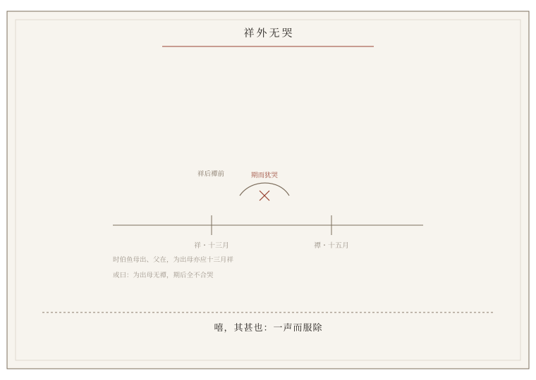

檀弓上 · 三·二十七 · 第 230 课
伯鱼之母死，期而犹哭。夫子闻之曰「谁与哭者」，门人曰「鲤也」，夫子曰「嘻，其甚也」。伯鱼闻之，遂除之。注「嘻，悲恨之声」。
说什么事：一个儿子在出母之丧上哭过了头。
落在哪一层：礼，兼及礼制与礼意。论「祥外无哭」。
为何编在此位：上节论一族之归，此节论一人之哭。归有界，哭亦有界。
【经】伯魚之母死，期而猶哭。夫子聞之曰：「誰與哭者？」門人曰：「鯉也。」夫子曰：「嘻，其甚也。」伯魚聞之，遂除之。
【注】伯鱼，孔子子也，名鲤。犹，尚也。嘻，悲恨之声。
【疏】此一节论过哀之事。「悲恨之声」者，谓非责伯鱼，是悲恨之声也。时伯鱼母出，父在，为出母亦应十三月祥、十五月禫；言「期而犹哭」，则是祥后禫前。祥外无哭，于时伯鱼在外哭，故夫子怪之，恨其甚也。或曰：为出母无禫，期后全不合哭。
期 一年之丧，十三月祥。
犹哭 注「犹，尚也」。期已至而犹哭。
谁与哭者 「与」为语辞。谁在哭。
嘻 注「悲恨之声」。非斥责之词。
其甚也 太过分了。
除之 除其服。
伯鱼之母死，过了周年还在哭。夫子听见了，问：「是谁在哭？」门人说：「是鲤。」夫子说：「嘻，太过分了。」伯鱼听说，便除了服。
此节三层：一哭、一问、一除。伯鱼哭其出母过周年，夫子不斥，只发一声「嘻」。注特意辨明「悲恨之声，非责」。伯鱼听到这一声，便自除服。全节最见分寸处：父亲对儿子的过，只肯用一声叹，不肯用一句责；儿子对父亲的叹，不肯等第二声。
第一层 出母之服 伯鱼之母已被出，而伯鱼为她服。疏「为出母亦应十三月祥、十五月禫」。此层可见古礼对「出母」的处理：子不为母绝，服有降而无断。
第二层 祥外无哭 疏「祥外无哭，于时伯鱼在外哭，故夫子怪之」。所犯不在服，在哭。服期已满，哀犹不止，哭声便成了过。礼之分寸，细到「哭」这一件事的期限。
第三层 一声之教 「嘻」是一声叹，不是一句训。注辨之甚明。此中有一层极深的父子之礼：父不直斥其子之过，子不待父之再言。疏又存「或曰：为出母无禫，期后全不合哭」，是另一读，更严。
第四层 遂除之 「闻之，遂除之」。子路闻一言而除服，伯鱼闻一叹而除服。檀弓上记除服者两见，皆不辩、不请、不迟。此是古人之风：理到即从。
与今日何干 凡丧亲者，最难点在「何时可以不再哭」。此节给的界很硬：祥外无哭。今天听来近乎不情，但它护的是另一面——不让哀变成一种无终点的自我消耗，也不让旁人无从劝起。
| 左 | 右 |
|---|---|
| 伯鱼之母死 | 母已被出，父在 |
| 期而犹哭 | 十三月祥，祥外无哭 |
| 谁与哭者 | 夫子不直问其子 |
| 嘻，其甚也 | 悲恨之声，非责 |
| 祥后禫前 | 期而犹哭，正在此际 |
| 伯鱼闻之，遂除之 | 一叹而服除 |
| 或曰为出母无禫 | 期后全不合哭，更严之一读 |
画一间庭院的黄昏，视点平而略低。庭中一张素席，席上一只空着的陶碗与一双箸。席侧立着一位青年男子（深衣、束发），背对观者，肩微动，面前无物。庭的另一端，一位长者（衣色浅、须发斑白）立在廊下，侧耳向外，一手扶柱，未走近。庭中地面上散落几片枯叶。不写文字、不画人面。赭色只用在廊柱的一道横纹与陶碗的沿口上。
